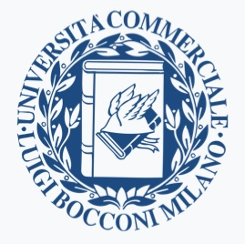

Academic positions
Harvard T.H. Chan School of Public Health, Department of Biostatistics, Boston, MA, U.S.A.
- Postodoctoral research fellow. September 2023 – current
- Supervisors: Jeffrey W. Miller and Giovanni Parmigiani.
Work experience
Google LLC, San Bruno, CA, U.S.A.
- Intern at the Youtube Data Science Team, Summer 2022.
- Internship mentors: Lee Richardson and Jacopo Soriano.
Generali Italia S.p.A., Milan, Italy.
- Intern at the Advanced Analytics Solutions team, June 2018 – July 2019.
- Supervised by Massimo Natale. Team lead by Davide Consiglio.
Education
Duke University, Department of Statistical Science, NC, U.S.A.
- Ph.D. in Statistical Science, August 2019 – September 2023.
- Advisor: Professor David B. Dunson
- Co-advisor: Tommaso Rigon
- Disseration: Ecological modeling via Bayesian nonparametric species sampling priors. Link pdf Slides

Bocconi University, Milan, Italy.
- Master’s degree in Economics and Social Sciences, September 2016 – March 2019.
- Graduation grade: 110 cum laude
- Final thesis: Conjugate Fractional Factorial Thompson Sampling via unified skew-normal, with Daniele Durante [pdf]
Bocconi University, Milan, Italy.
- Bachelor’s degree in Economics and Social Sciences, September 2013 – September 2016.
- Graduation grade: 110 cum laude
- Exchange program at The University of Chicago, Department of Economics, Fall 2015.
- Research assistant at The University of Chicago, Department of Economics, Summer 2016, with Melissa Tartari
Awards
- [2023]: PQG travel award, Harvard T.H. Chan School of Public Health.
- [2022]: BEST award for Ph.D. Student Research for the paper Bayesian modeling of sequential discoveries, Department of Statistical Science, Duke University.
- [2022]: Poster award at the 2022 ISBA World Meeting, Montreal, Canada.
- [2022]: Travel grant (on competitive basis) for the 2022 ISBA World Meeting, Montreal, Canada.
- [2021]: Ph.D. Teaching assistant of the Year, Department of Statistical Science, Duke University.
- [2021]: Best Postdoc/Student paper award at the 2021 ISBA World Meeting, held online.
- [2016–2019]: Bocconi Merit Award Scholarship (full tuition covered).
Teaching experience
- [Spring 2023] - Teaching assistant, STA440 - Case Studies in the Practice of Statistics (undergraduate). Instructor: Amy Herring. Duke University.
- [Fall 2021] - Teaching assistant, STA610 - Hiearchical models (graduate). Instructor: Olanrewaju (Michael) Akande. Duke University.
- [Fall 2020] - Teaching assistant, STA601 - Bayesian statistics (graduate). Instructor: David B. Dunson. Duke University. Recipient of the 2021 Ph.D. Teaching assistant of the Year.
- [Spring 2020] - Teaching assistant, STA360 - Bayesian statistics (undergraduate). Instructor: Simon Mak. Duke University.
Editorial work
- I have served as reviewer for the following journals: Electronic Journal of Statistics, Bayesian Analysis, Ecography, Philosophical transactions of the Royal Society A, Computational Statistics & Data Analysis.
Skills
- Programming Languages: R, Python, C++, LaTex
- Languages: Italian (mothertongue), English, Spanish.
Interests and activities
- Running. I am preparing the 2024 Philadelphia marathon!
- Painting. See here
- Music. Bass player of The Bayesment Project
- Former actor, semi-professional level.